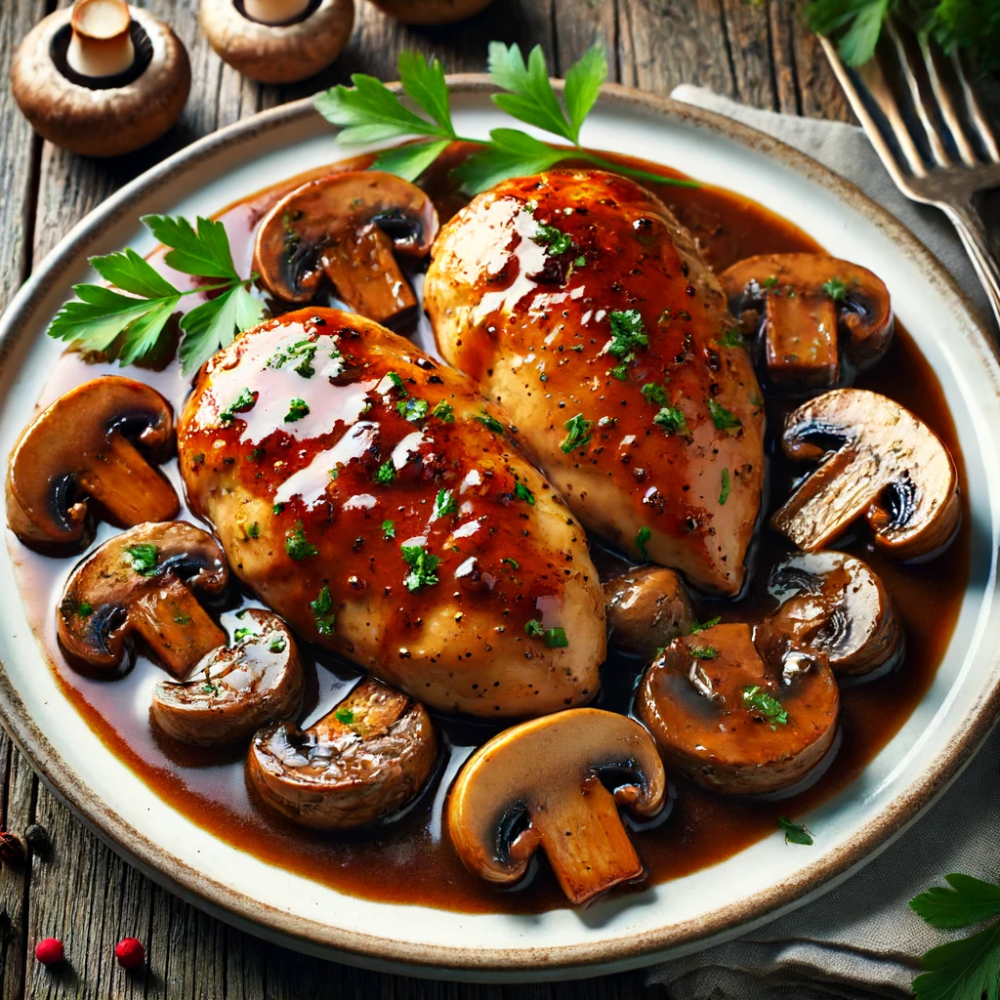

Chicken Marsala Recipe

This Chicken Marsala recipe is a classic Italian-American dish featuring tender chicken breasts in a rich and flavorful Marsala wine sauce with mushrooms. It's perfect for a cozy dinner or a special occasion.
Ingredients
For the Chicken
- 4 boneless, skinless chicken breasts
- Salt and pepper to taste
- 1/2 cup all-purpose flour, for dredging
- 3 tablespoons olive oil
- 4 tablespoons unsalted butter
For the Sauce
- 1 shallot, finely chopped
- 2-3 cloves garlic, minced
- 1 cup Marsala wine (dry or sweet, as preferred)
- 1 cup chicken broth
- 1 cup cremini or white mushrooms, sliced
- 1/2 cup heavy cream (optional, for a richer sauce)
- 1 tablespoon chopped fresh parsley (for garnish)
Instructions
Prepare the Chicken
- Place the chicken breasts between two pieces of plastic wrap and pound them to an even thickness (about 1/2 inch thick) using a meat mallet or rolling pin.
- Season both sides of the chicken breasts with salt and pepper.
- Dredge the chicken in flour, shaking off any excess.
Cook the Chicken
- In a large skillet, heat the olive oil and 2 tablespoons of butter over medium-high heat.
- Add the chicken breasts to the skillet and cook until golden brown on both sides, about 4-5 minutes per side. Remove the chicken from the skillet and set aside.
Prepare the Sauce
- In the same skillet, add the remaining 2 tablespoons of butter.
- Add the chopped shallot and cook until softened, about 2-3 minutes.
- Add the minced garlic and sliced mushrooms, cooking until the mushrooms are browned and any liquid has evaporated, about 5-7 minutes.
- Pour in the Marsala wine, scraping up any browned bits from the bottom of the skillet. Let it simmer for about 2 minutes to reduce slightly.
- Add the chicken broth and bring the mixture to a simmer. Cook for another 5 minutes, allowing the sauce to reduce and thicken.
- If using, stir in the heavy cream and let the sauce simmer for an additional 2-3 minutes until it reaches the desired consistency.
Combine and Serve
- Return the chicken breasts to the skillet, spooning the sauce and mushrooms over the top.
- Let the chicken simmer in the sauce for 2-3 minutes, ensuring it is heated through and well-coated with the sauce.
- Garnish with chopped fresh parsley.
Serving
- Serve the Chicken Marsala hot, with the sauce spooned over the top.
- Pair it with mashed potatoes, pasta, or a side of vegetables.